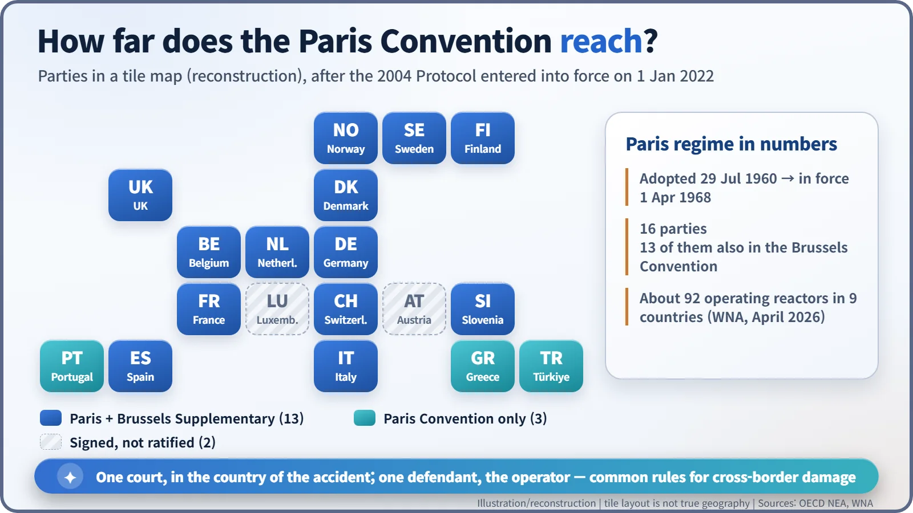
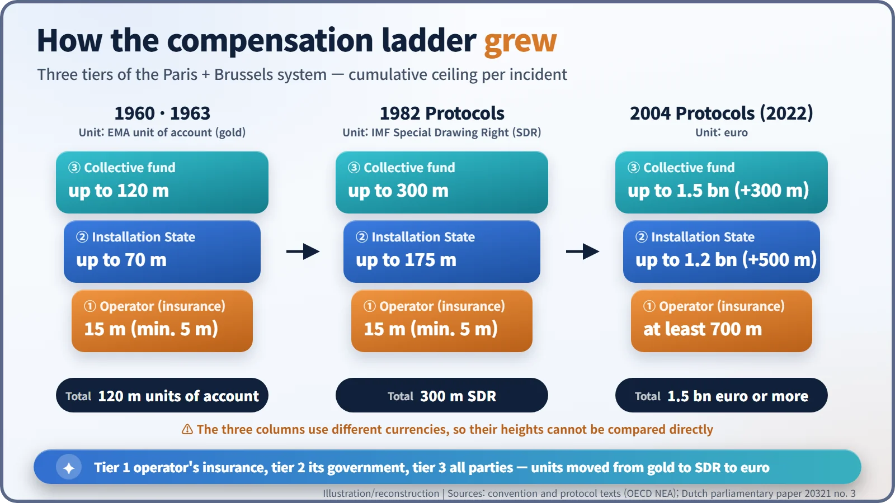

Nuclear History · 228
The Wind Carries No Passport: The 1960 Paris Convention on Nuclear Third Party Liability
Radioactivity ignores borders, so the OEEC wrote compensation rules that would cross them too, and later raised the ladder from 15 million gold units to 1.5 billion euro.
Adopted in Paris on 29 July 1960 under the Organisation for European Economic Co-operation, the Paris Convention set common rules for compensating victims of a nuclear accident across Western Europe: the operator is liable without proof of fault, claims are channelled to the operator alone, liability is limited and must be insured, and one court hears the case. A 1963 Brussels convention added state and shared funds on top, and protocols in 1982 and 2004 raised the ladder to €1.5 billion.
A farmer across the river
Picture a river with a different country on each bank. On one side stands a nuclear installation. One day there is an accident, and radioactive material drifts on the wind to a village across the water. The farmer over there has lost a harvest. Whom does she sue, and in which country's court? The company that ran the plant? The firm that built the reactor? The supplier of a faulty valve?
In late-1950s Western Europe, where borders sit close together and a nuclear industry was just taking its first steps, this was not an idle puzzle. The answer Europe wrote down was adopted in Paris on 29 July 1960: the Convention on Third Party Liability in the Field of Nuclear Energy, known simply as the Paris Convention. [1]
The reactors reached the border before the law did
The setting was the Organisation for European Economic Co-operation (OEEC), created in 1948 to share out Marshall Plan aid. Since 1949 its headquarters had been the Château de la Muette in western Paris. On 1 February 1958 the OEEC set up a European Nuclear Energy Agency (ENEA), and harmonising the rules on nuclear accident compensation became one of its lawyers' first tasks. [2]
Each country had its own civil law. Left alone, one accident could spark parallel lawsuits in several countries, and the companies supplying reactors and components would hesitate in the face of open-ended liability. The convention's preamble sums up the balancing act. Its parties were "desirous of ensuring adequate and equitable compensation for persons who suffer damage caused by nuclear incidents" while making sure "that the development of the production and uses of nuclear energy for peaceful purposes is not thereby hindered". [1]
Five firm knots
The convention answered the farmer's questions one by one.
- Strict liability. The operator is liable whether or not it was at fault. A victim only has to show that the damage came from a nuclear incident.
- Channelling. Claims go to one party only: the operator of the installation. The text is blunt: "no other person shall be liable". Reactor builders and component suppliers drop out of the picture.
- Limits in amount and time. The operator's liability was set in principle at 15 million "units of account". A country could set a higher or lower figure, but never below 5 million. The unit was that of the European Monetary Agreement, pegged to 0.88867 grams of gold, the value of one US dollar at the time. Actions had to be brought within ten years of the incident. [4]
- Compulsory cover. The operator must hold insurance or other financial security for the full amount.
- One court. Cases are heard only in the courts of the country where the incident happened, without discrimination by nationality or residence.
Damage caused by war or civil insurrection was excluded, as was, unless national law said otherwise, damage from "a grave natural disaster of an exceptional character".
On 31 January 1963 the Brussels Supplementary Convention added more rungs to the ladder. The operator's insurance formed the bottom tier. Above it, the government of the country hosting the installation paid up to 70 million units of account, and above that all the parties together paid up to 120 million. The shared tier was split half according to each country's gross national product and half according to the thermal power of its reactors. [4]
Why let the suppliers off?
Channelling divided opinion from the start. Critics see it as a favour to industry, sparing manufacturers and suppliers from lawsuits, and they note that any cap pushes the risk above it onto society. Supporters answer that victims need not work out who was to blame: they have a single, insured party to claim against, straight away. Both views remain part of the debate today. [5]
Slow to start, raised over time
It took almost eight years for the treaty to come into force, on 1 April 1968; the Brussels Convention followed on 4 December 1974. Meanwhile the OEEC became the OECD in 1961, and in 1972 the ENEA became the OECD Nuclear Energy Agency (NEA). [3]

As the years passed, the numbers aged. A protocol of 16 November 1982 swapped the gold-based unit for the International Monetary Fund's Special Drawing Right (SDR) and lifted the whole ladder to 300 million SDR. Protocols adopted on 12 February 2004 moved to the euro: at least €700 million from the operator, €500 million more from the installation state and €300 million from all parties, €1.5 billion in total. They also brought environmental damage and preventive measures into scope, extended the claim period for death and personal injury to 30 years, and removed the natural-disaster exemption. Because every party had to ratify first, these changes only took effect on 1 January 2022. [2] [5]

| Tier | 1960 / 1963 (units of account) | 1982 protocols (SDR) | 2004 protocols (euro) |
|---|---|---|---|
| 1. Operator (insurance) | 15 million in principle, at least 5 million | 15 million in principle, at least 5 million | at least 700 million |
| 2. Installation state, up to | 70 million | 175 million | 1.2 billion |
| 3. All parties together, up to | 120 million | 300 million | 1.5 billion |
Where the convention stands today
Today the Paris Convention has 16 parties, 13 of which also belong to the Brussels Convention; Austria and Luxembourg signed but never ratified. The World Nuclear Association counts about 92 operating reactors in nine countries under the regime as of April 2026. Covering the world beyond the OECD fell to the IAEA's Vienna Convention, and to the 1988 Joint Protocol that links the two systems. [3] [5]
So, back to the farmer across the river. The Paris Convention's answer: sue the operator, in the courts of the country where the accident happened, without having to prove fault. Radioactivity does not stop at a border post, so Europe made sure the rules on compensation would not stop there either.